“AppStar” Documentation by “Beantown Themes” v1.2
“AppStar”
Created: 8/27/2013
Last Updated: 03/14/2014
By: Beantown Themes
Twitter - Facebook - Email Newsletter
Thank you for purchasing AppStar. If you have any questions that are beyond the scope of this help file, please visit our support forum. Thanks!
Table of Contents
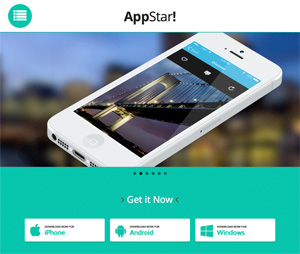- Introduction
- CSS Files
- HTML Structure
- Main Navigation
- Font Awesome Icon Font
- Intro Slider
- Purchase Section
- Features Section
- Screenshots Section
- FAQ Section
- Testimonials Section
- Team Section
- Video Section
- Twitter Feed
- Newsletter Signup
- Stay Connected Section
- Sources and Credits
A) Introduction - top
Welcome to AppStar, a super clean landing page great to showoff you app or portfolio. AppStar is fully responsive and super easy to work with so you should have no trouble getting your own landing page online in no time!
B) CSS Files - top
AppStar was built on top of the popular responsive framework Skeleton. Skeleton is a responsive framework which uses media queries to adjust the size of columns and rows depending on your screen width. Skeleton also includes basic CSS styling.
There are 6 different color schemes which can be chosen by using layout1.css - layout6.css.
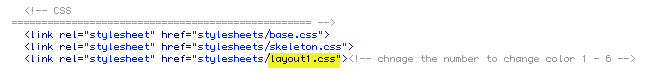
The layout.css file that you choose is where you will want to make your CSS edits, there is a table of contents at the top to help.
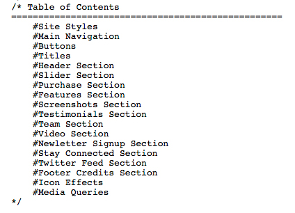
C) HTML Structure - top
NOTE: A server running PHP is required for scripts to function properly. Please upload your files to a server running PH and change the extension of the page from ".html" ".php".
The AppStar framework is created with a 16 column layout (so from the left column of the .container to the right column of the .container there are 16 columns). The basic structure to set up a "row" in your layout is to add a div with the class of container (the class .container centers the content within in the middle of the browser window), inside that add a div with the class row (the class .row clears other floats/rows) and then within that add divs with the width you want, the total should add up to 16 columns. These columns stack when smaller browser window sizes are being used.
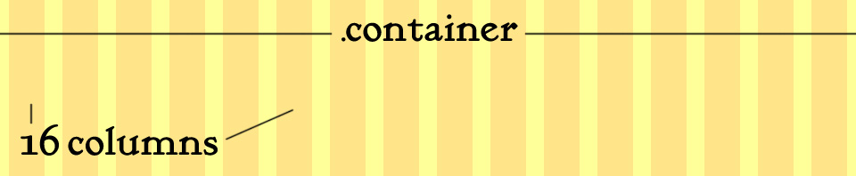
Example:
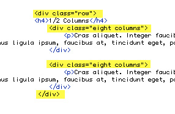
Example:
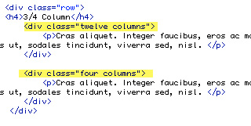
Example:
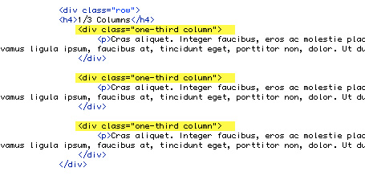
D) Main Navigation - top
Each section of your page needs a unique ID in order to be linked to, example:
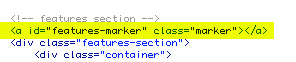Each list item in the main navigation has 3 things to edit. First set the link to the unique ID on the page, then set which icon you want to use (http://fortawesome.github.io/Font-Awesome/icons), and finally set the text for the link.
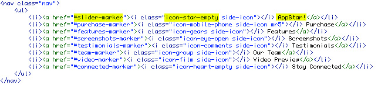E) Font Awesome Icon Font - top
The Font Awesome icon set is built into AppStar. Visit http://fortawesome.github.io/Font-Awesome/3.2.1/icons/ to see all available icons and to easily get the embed code for each. These icons are used in the template for services, navigation icons, social, icons, etc. The icons are a font, so you can use CSS to style the icons.
F) Intro Slider - top
Visit the sources and credits section at the bottom of this page for links to the free PSD files used for the iPhone and Android devices as seen in the demo.
The main slider is a set of images within list items:
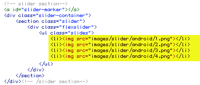
You can choose slide or fade transition for the slides by editing this line of code in the screen.js file (other options such as timing are adjustable by opening the assets/flexslider/jquery.flexslider.js file).
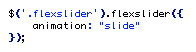
Note: If you choose to use the fade effect add the extra CSS class "fade-slider" to the flexslider div as shown below (this adds extra required spacing above the div).
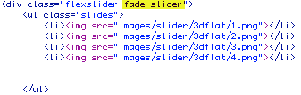
G) Purchase Section - top
Enter the link to your item for sale in the purchase section.
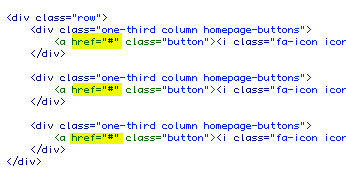
H) Features Section - top
See the image below, this is where you choose the icon for each feature:

I) Screenshots Section - top
Set a thumbnail image, enlarged image, and caption text.
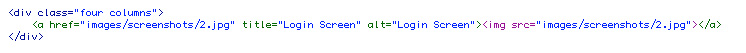
J) FAQ - top
Each qustion in the FAQ section containes a header (the question) and a content section (the answer).
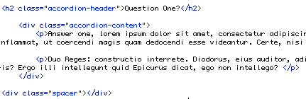
K) Testimonials Section - top
The testimonials section also uses the Flex Slider. You can set the quotes to fade or slide in the scripts.js file.
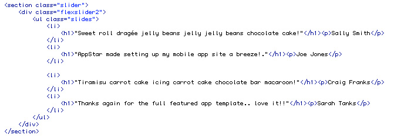
L) Team Section - top
Enter team members images, text, and social links with font awesome icons.
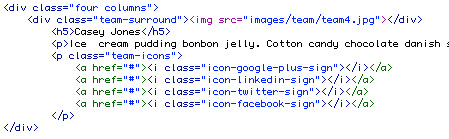
M) Video Section - top
AppStar uses the FitVide script for responsive videos. All you need to do is to paste the embed code that youtube or vimeo gives you, the script does the rest.
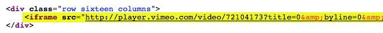
N) Twitter Feed - top
To setup your twitter feed you will need to create an application at Twitter. Please visit: https://dev.twitter.com/apps. Copy your consumer key, consumer secret, access token and access token secret and paste this into the grabtweets.php file located in the includes folder.
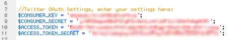Then open scripts.js in the js folder and enter your user name and the number of tweets you want to show. Please note: this requires a server running PHP, you will not be able to see your tweets on your local machine.
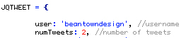O) Newsletter Signup - top
To set the email address that the newsletter signup will be mailed to open assets > contact-form > process.php
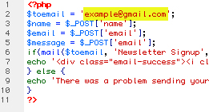
P) Stay Connected Section - top
Any of the Font Awesome icons can be used in the stay connected section. You can get the code for the icons on this page: http://fortawesome.github.io/Font-Awesome/icons/. Change the name of the icon (shown below) and add your link. 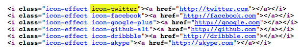
Q) Sources and Credits - top
I've used the following images, scripts or other files as listed.
- fonts from Google Font API (Apache license)
- Font Awesome Icons (SIL OFL 1.1 license)
- Magnific (MIT license)
- Sidr (MIT license)
- fitvids (WTFPL license)
- Flex Slider 2 (GPLv2 license)
- Demo Graphic Respources:
- Demo Images From http://unsplash.com
- Demo Images From http://photodune.net
- Flat iPhone PSD
- Blurred Cities
- App Screenshots/Mockups
- Create Your Own Product Screenshots
- Android PSD/Graphics
Thank you for purchasing AppStar! Follow Beantown Themes on Twitter, Facebook and ThemeForest (for updates and new items).
Sign up for our email newsletter to recieve new product updates and freebies by email.